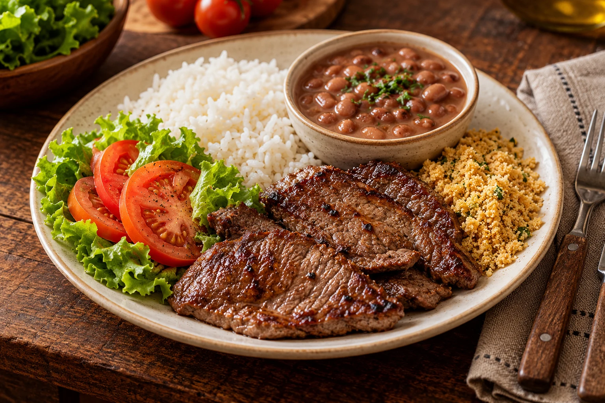

Self-service
Uma opção de self-service para a sua refeição em Campina Grande.
CAMPINA GRANDE · PARAÍBA
Conheça o Restaurante Santa Massa, self-service em Campina Grande, com refeições no local.
Avaliação conforme dados fornecidos para este site.

À MESA COM O SANTA MASSA
No bairro Universitário, em Campina Grande, o Santa Massa é uma opção de restaurante self-service para a sua pausa do almoço. Venha conhecer o restaurante e fazer sua refeição no local.
Encontre o Santa MassaPARA A SUA VISITA
O essencial para conhecer o
Santa Massa antes de chegar.
Uma opção de self-service para a sua refeição em Campina Grande.
Faça uma pausa e venha almoçar no restaurante.
Por pessoa. Faixa informada por clientes, sujeita a alterações.
Entre em contato com o restaurante.
QUEM JÁ SENTOU À MESA
de 5 · 16 avaliações no Google
Números fornecidos para o site, sem atualização automática.
Comida excelente
A GENTE SE ENCONTRA AQUI
Restaurante no Universitário,
Campina Grande.
Consulte os horários de funcionamento pelo contato.